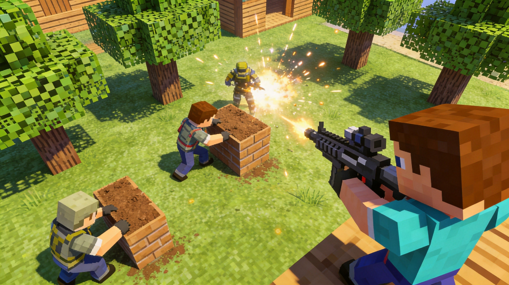
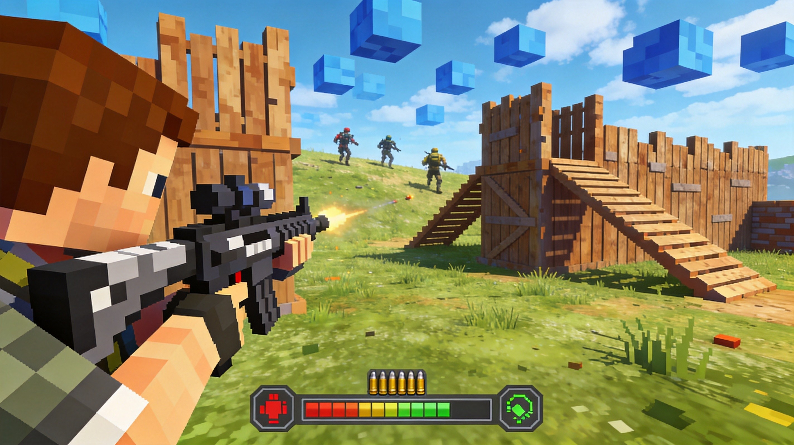
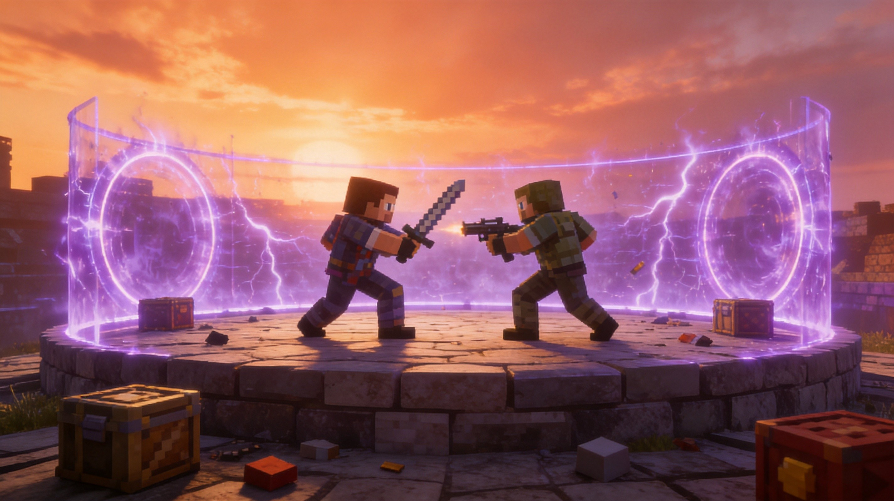

Introduction
Craftnite.io is an exciting browser-based FPS battle royale that combines fast-paced shooting with deep survival and building mechanics. What makes Craftnite.io truly unique is its seamless integration of resource gathering, weapon crafting, and structural building directly into a shrinking map environment. Players drop into the arena, farm trees for materials, and craft their way to victory. The ability to dynamically build stairs to claim high ground or use dynamite to obliterate enemy fortifications adds a thrilling tactical layer to every firefight. Players love the game for its accessibility as a browser title without sacrificing the complex, rewarding gameplay loop of top-tier battle royales. Whether you are sniping from a custom-built tower or rushing enemies with crafted weapons, Craftnite.io delivers intense, unpredictable action in every single match.
Getting Started

To start playing Craftnite.io, simply visit the official website, enter your desired name, select your skin, and drop into the shrinking map. Your primary goal is to survive, gather resources, and eliminate opponents to claim the number one spot. Movement and combat rely on intuitive controls: use WASD to move and SPACE to jump. Aim and shoot by holding LEFT-CLICK, and quickly swap between your crafted weapons and tools using the number keys 1 through 5. You can also customize these keybinds in the options menu. In your first few matches, focus on basic mechanics like farming trees to gather essential resources. These resources are crucial for crafting weapons and building structures. Prioritize getting a weapon early to defend yourself, then start building basic cover. Remember that the map will continuously shrink, forcing you into closer encounters with other players, so always keep an eye on the safe zone and plan your rotations accordingly.
Basic Tips
1. Farm Trees Early: Trees are your primary resource source. Farm them immediately upon landing to gather materials for crafting weapons and building stairs. 2. Utilize Stairs for High Ground: Building stairs is a core mechanic. Always try to secure the high ground during fights, as it gives you a significant aiming advantage and makes you harder to hit. 3. Aim for Headshots: Precision matters in Craftnite.io. Headshots not only deal more damage but also reward you with extra loot, helping you upgrade your gear faster. 4. Master Item Switching: Get comfortable using the 1, 2, 3, 4, and 5 keys to instantly switch between your weapons, building materials, and dynamite. Quick swapping is essential for survival. 5. Use Dynamite Wisely: Dynamite is a powerful tool to destroy enemy structures. If an opponent is hiding behind a built wall, throw dynamite to obliterate their cover and expose them to your attacks.
Advanced Strategies

1. High-Ground Rushing: Instead of just holding high ground, use your crafted stairs to aggressively push upwards during a firefight. Build a ramp, jump, and immediately build another piece of cover at the top to maintain momentum. 2. Dynamite Trapping: Don't just throw dynamite directly at enemies. Use it to destroy the base of an enemy's stair structure. Collapsing their high ground forces them into the open, allowing you to secure an easy elimination. 3. Loot Optimization: Since headshots grant bonus loot, practice your aim to maximize your resource intake. If you are in a prolonged fight, prioritize headshots to ensure you are constantly replenishing your ammunition and crafting materials from defeated players. 4. Map Rotation and Cover: As the battle royale map shrinks, use the terrain to your advantage. Build temporary walls while rotating through open areas to protect yourself from snipers, then abandon them once you reach the next safe zone.
Pro Tips

1. Edit Keybinds for Speed: While 1-5 is standard, customize your keybinds in the options menu to place your most-used building pieces and weapons on easily accessible keys, significantly reducing reaction time during intense build fights. 2. Baiting with Structures: Build a small, exposed structure to bait an enemy into throwing their dynamite or wasting ammo. Once their resources are completely depleted, push them aggressively while they are vulnerable. 3. Jump Building: Combine SPACE jumps with LEFT-CLICK building to create instant vertical cover. This advanced movement technique allows you to quickly gain elevation and dodge incoming fire simultaneously, keeping you alive longer.
Conclusion
Craftnite.io offers a thrilling blend of fast-paced FPS combat and creative building mechanics. By mastering resource gathering, utilizing stairs for high ground, and strategically deploying dynamite, you can dominate the shrinking arena. Jump into the browser, refine your aim for those crucial headshot loots, and start crafting your path to the number one spot. Good luck, and happy surviving!